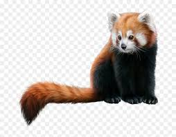
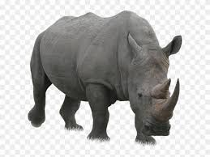

The Bengal tiger is found primarily in India with smaller populations in Bangladesh, Nepal, Bhutan, China and Myanmar. It is the most numerous of all tiger subspecies with more than 2,500 left in the wild. The creation of India’s tiger reserves in the 1970s helped to stabilize numbers, but poaching to meet a growing demand from Asia in recent years has once again put the Bengal tiger at risk.

Red Panda
Fascinating Cats Of Himalayas
The red panda is slightly larger than a domestic cat with a bear-like body and thick russet fur. The belly and limbs are black, and there are white markings on the side of the head and above its small eyes. Red pandas are very skillful and acrobatic animals that predominantly stay in trees. Almost 50 percent of the red panda’s habitat is in the Eastern Himalayas. They use their long, bushy tails for balance and to cover themselves in winter, presumably for warmth. Primarily an herbivore, the name panda is said to come from the Nepali word ‘ponya,’ which means bamboo or plant eating animal.

Black Rhino
Fierce Endangered Specie
European hunters are responsible for the early decline of black rhino populations. It was not uncommon for five or six rhinos to be killed in a day for food or simply for amusement. European settlers that arrived in Africa in the early 20th century to colonize and establish farms and plantations continued this senseless slaughter. Most people regarded rhinos as vermin and exterminated them at all costs.
WildLife Conservation
Steps Taken For WildLife Conservation
Like forests, wildlife is also a national resource which not only helps in maintaining the ecological balance but is also beneficial from economic, recreational and aesthetic points of view.But with the expansion of agriculture, settlement, industrial and other developmental activities and mainly due to greed of man the number of wild animals gradually became lesser and lesser.
Endangered species are those considered to be at risk of extinction, meaning that there are so few left of their kind that they could disappear from the planet altogether. Endangered species are threatened by factors such as habitat loss, hunting, disease and climate change, and usually, endangered species, have a declining population or a very limited range.
The current rate of extinction is thought to be far greater than the expected natural rate, with many species going extinct before they have even been discovered. Shockingly, current estimates suggest that a third of the world’s amphibians, a quarter of all mammals and one in eight birds are endangered.